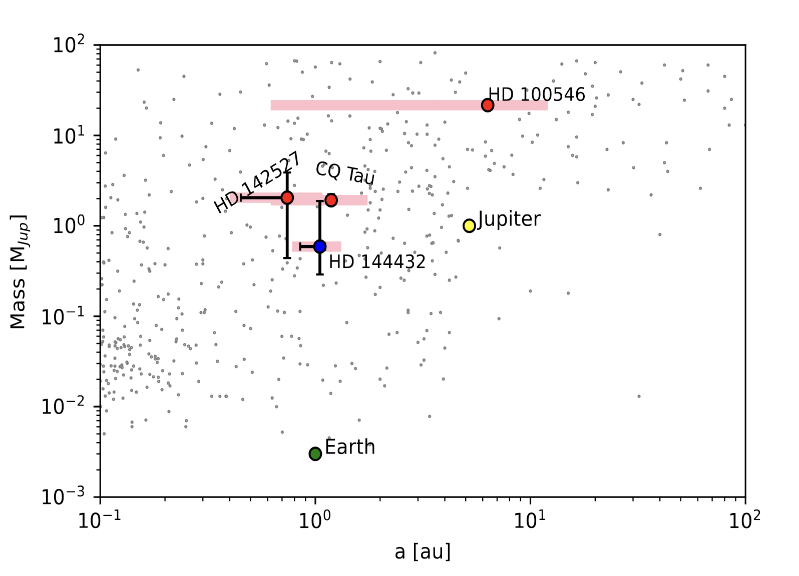
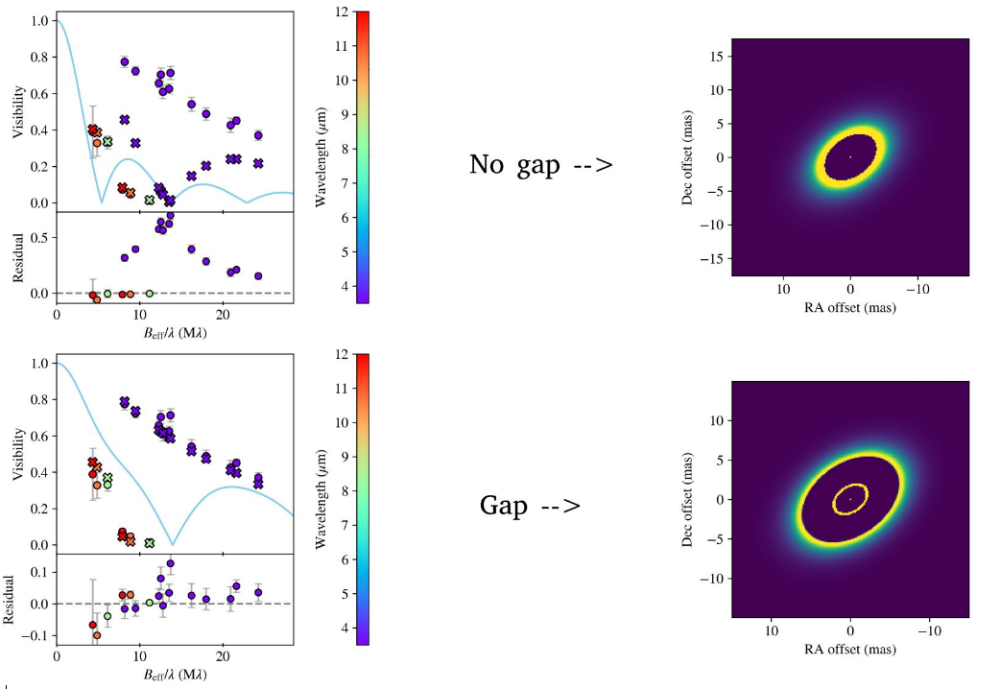

Project Description

Protoplanetary (planet-forming) disks often exhibit substructures such as rings, spiral arms, asymmetries, and gaps. These features are believed to be linked to the presence of forming planets.
As part of my First Master's Thesis at Leiden University (the MSc program requires students to write two theses!), I modelled and analysed the inner structure of a large sample of protoplanetary disks observed with VLTI-MATISSE in the L- and N-bands.
My main goal was to find gaps within the inner few au of the disks as those can be indicators of nascent planets. To achieve this, I fitted geometric models (2D Gaussian and temperature gradient models with and without gaps) to the interferometric visibility and constrained the model parameters with the emcee Python package. If a gap is caused by a forming planet, its width is expected to correlate with the planet's mass. After I found indicators of gaps, I calculated whether they are wide enough to be caused by a planet using the methodology of Kanagawa et al. 2016.
Overall, I found four planet candidates around CQ Tau, HD 100546, HD 142527, and HD 144432. The figure above shows the planets' calculated mass versus their semimajor axes, with the pink shaded regions indicating the modelled gap widths. An example of the visibility modelling is shown below.

For more details on the modelling, please read:
Varga, J.; [and 39 others, including Kecskeméthy, V] (2024). Mid-infrared Evidence for Iron-Rich Dust in the Multi-Ringed
Inner Disk of HD 144432. Astronomy & Astrophysics, Volume 681, id.A47, 29 pp., January 2024
DOI: 10.1051/0004-6361/202347535
or
Varga, J. et al. (2024). The asymmetric inner disk of the Herbig Ae star HD 163296 in the eyes of VLTI/MATISSE: evidence for a vortex? Astronomy & Astrophysics, Volume 647, id.A56, 22 pp., March 2021
DOI: 10.1051/0004-6361/202039400